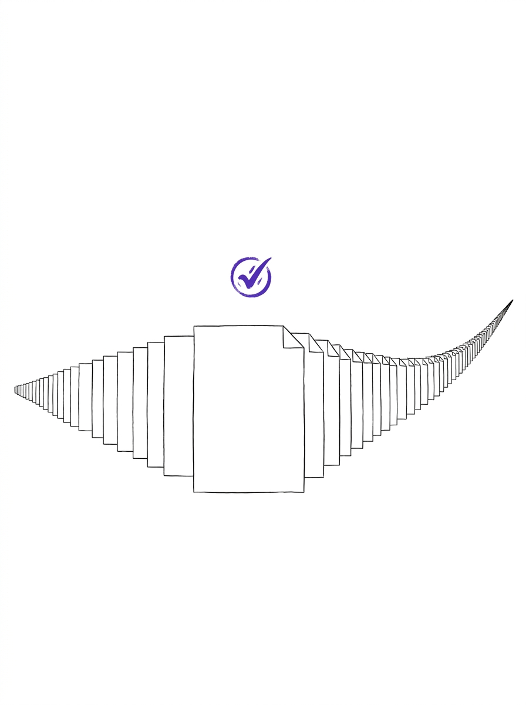
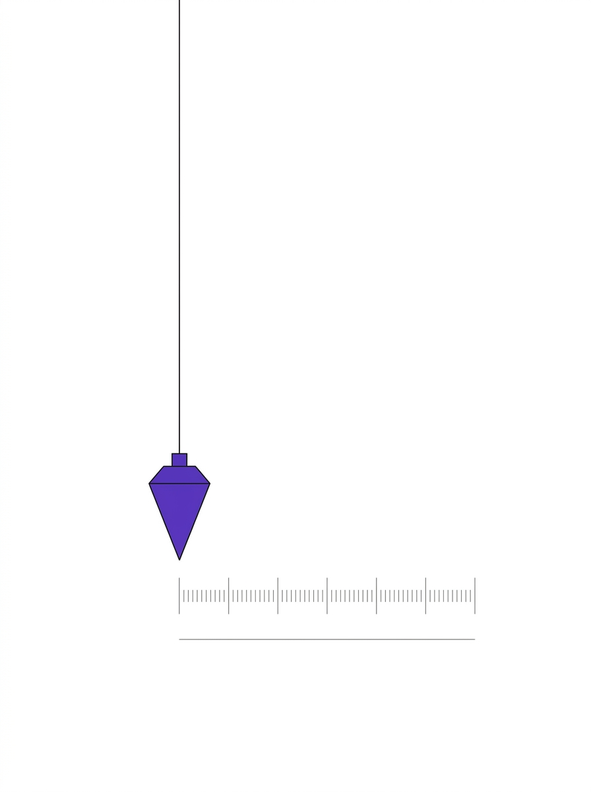
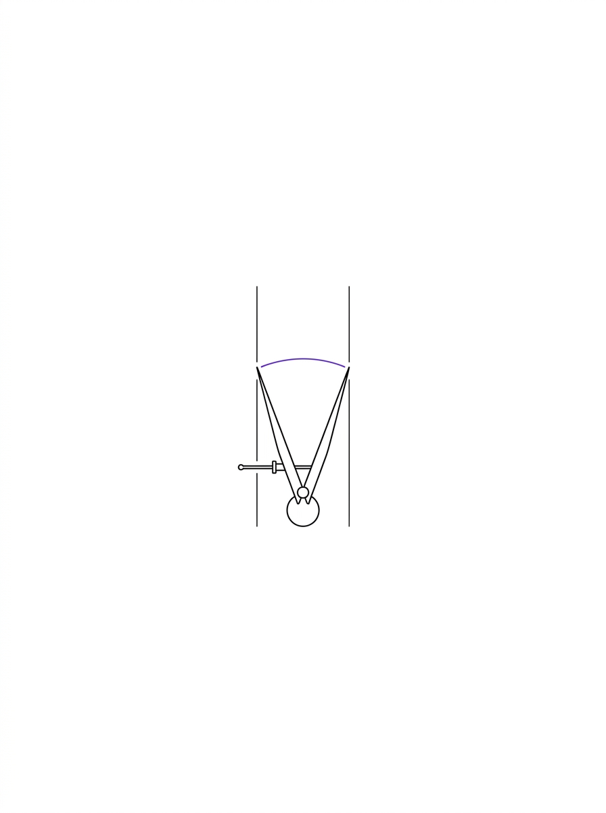
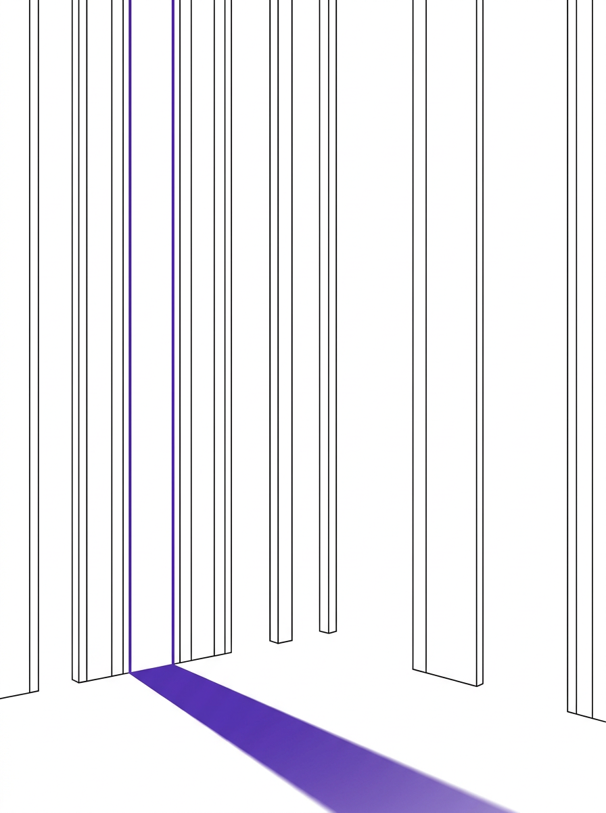

Institutions were built for human decisions.
We are now routing those decisions through machines.
I study what breaks.
Independent researcher working on how AI reshapes human judgment, labor markets, institutions, and governance — through formal models, behavioral experiments, and open research instruments.
Six questions organize everything
Every paper, experiment, and dataset on this site answers one of these. Start here, not with the publications list.
Current investigations
What is being worked on right now, and what state it is honestly in.

Oversight saturation
A two-queue model of when institutions substitute ceremonial sign-off for real review — plus SEDI, a metric that detects the substitution from ordinary operational telemetry, without reading a single decision. Validated on 22 months of real GitHub review data.
Read the paper
Anchoring asymmetry
Do people anchor on a machine's number the way they anchor on a person's? An 18,000-call audited battery, a failed cross-model replication, a public meta-analysis — and a human study now waiting on ethics approval.
See the evidence
Proxy & measurement validity
SEC comment letters, delisting price benchmarks, governance-text coding, ML evaluation metrics — four literatures that quietly treat a proxy as the thing it measures. Checked, case by case, against the primary record. One reversed sign.
View the methodsThree findings, stated plainly
Capacity, not caps, fixes the collapse.
Doubling reviewer capacity or halving AI throughput restores review quality to baseline. Raising the quality floor of ceremonial review alone reduces damage — but never eliminates the transition.
The asymmetry depends on the anchor, not the machine.
AI-generated anchors produce contrast rather than assimilation — but only for incidental, comparative anchors under uncertainty. Informative, embedded anchors assimilate, matching the human baseline.
A proxy reversed sign against the regulator's own data.
A widely used SEC-oversight proxy, recomputed against the SEC's own reporting-issuer statistics, reverses direction entirely. The proxy is not the thing it proxies for.
From the notebook
Dated entries, written for the record. Failures included, deliberately.
Open Institutional Capacity Observatory
Five instruments. Public data. Built to be reused.
QAI, SEDI, Authorization Saturation, Procedural Capacity, and ASI — the program's metrics, released as open-source infrastructure with public datasets, reproducible benchmarks, and reserved replication slots for each paper above.
Enter the observatory
From collaborators and reviewers
“Rare combination of theoretical rigor and shipping speed — he builds the instrument, then writes the paper.”RESEARCH COLLABORATOR — JOINT EXPERIMENTAL WORK
“Asks the uncomfortable methodological questions first. The proxy-validation harness changed how our group codes text data.”
“The observatory is the first academic infrastructure I've used that feels like it was built to be reused, not just published once.”